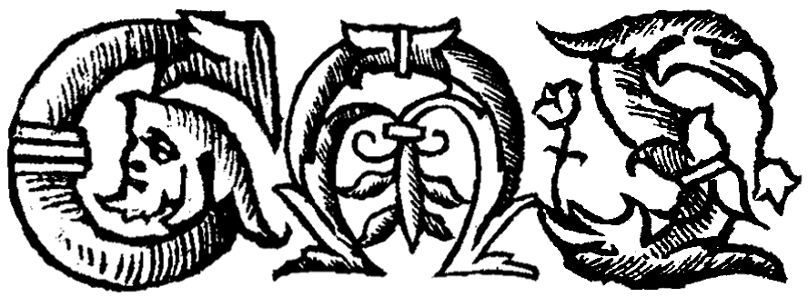
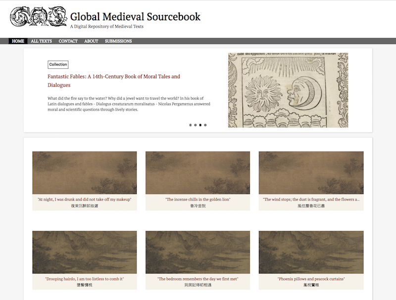

Global Medieval Sourcebook
A Digital Repository of Medieval Texts
The Global Medieval Sourcebook is currently undergoing maintenance. Please visit
http://sourcebook.stanford.edu
in late October 2018 for the site relaunch.
